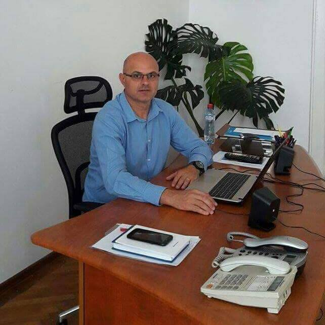

1. Nume: BLIDARU
2. Prenume: MARGARIN SERBAN
3. Data nasterii: 30 MAI 1969
4. Nationalitatea: ROMÂNA
5. Studii:
1984 - 1988 - Liceul Teoretic Dinicu Golescu Campulung; Liceul Industrial Constructii Automobile nr. 1 <<Dacia>> Pitesti
1990 - 1994 - Academia Nationala de Educatie Fizica si Sport Bucuresti. Curs de zi, cu media examenului de licenta 9,67